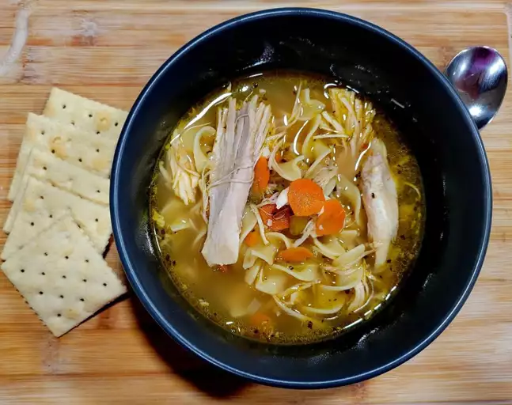

Quick and Easy Chicken Noodle Soup

Description
Whether you're feeling under the weather or you're just in need of a little comfort,
there's nothing like homemade chicken noodle soup to warm you up from the inside out.
With this shortcut recipe, you can have the best chicken noodle soup of your life on the
table in just 40 minutes.
Ingredients
- 1 tablespoon butter
- Onion and celery: 1/2 cup of both
- Broth: 4 cans of chicken, 1 can of vegetable broth
- Chicken: 1/2 pound cooked breast
- Noodles: 1.5 cups egg noodles
- Carrots: 1 cup sliced
- Basil and Oregano: 1/2 teaspoon of each
Directions
- Melt butter in a large pot over medium heat. Add onion and celery and cook until just tender, about 5 minutes.
- Add chicken broth, vegetable broth, chicken, egg noodles, carrots, basil, oregano, salt, and pepper. Stir to combine and bring to a boil.
- Reduce heat and simmer for 20 minutes.